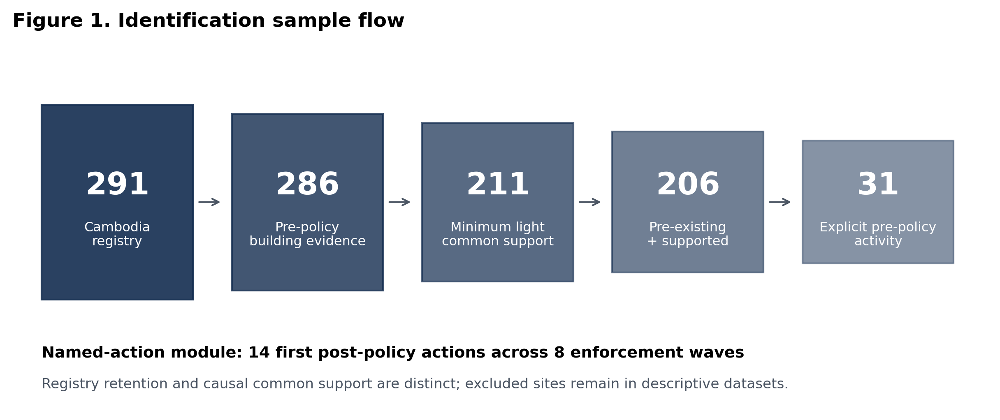
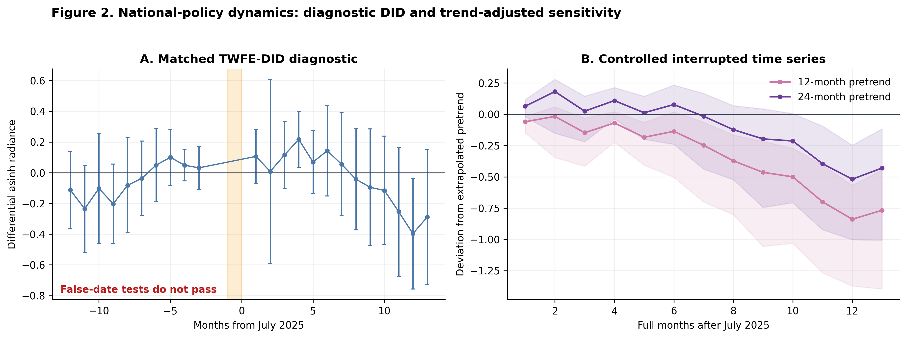
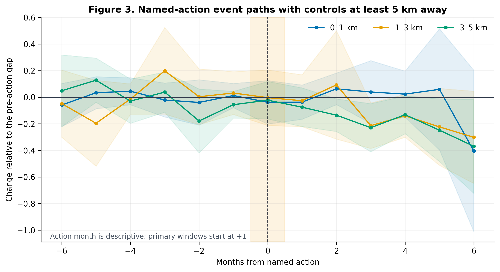
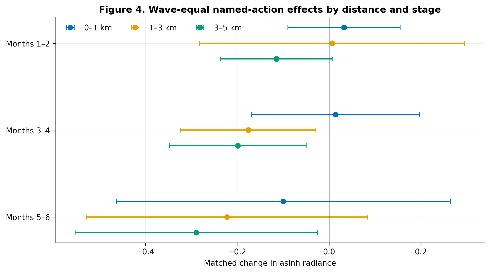
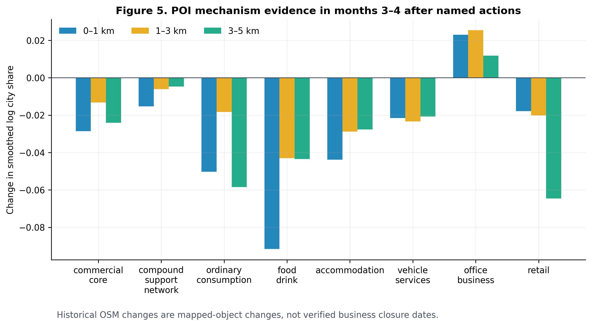

保存原页面、原图、URL、时间与SHA-256；重复文件按哈希识别。
RESEARCH OPERATIONS / 研究执行面板
正在读取进度…
01
数据采集状态
把“已经获得什么”“如何加工”“最终实验真正用了什么”分开，避免把下载量误当成分析样本。
PART 01 · SOURCE DATA
源数据层
原始页面、新闻、官方记录、影像和统计数据均保留来源、抓取时间与校验信息。
GEOGRAPHIC COVERAGE
园区登记库覆盖
当前园区实体以柬埔寨与缅甸为主；六国人口与夜光用于区域背景和跨境比较。
POPULATION · ECONOMY · URBAN ACTIVITY
六国人口与经济数据采集
柬埔寨、缅甸优先；老挝、泰国、越南和马来西亚半岛用于跨境比较。下载文件不等于可分析面板。
正在读取采集快照…
后续数据与研究边界
继续补齐可获得的官方统计；所有未下载或无法验证尺度的数据保持未完成状态。人口模型、户籍人口和园区内部实际人口始终分开。
PART 02 · PROCESSING
数据如何被处理
原始文件不直接进入结论。每一种资料先独立清洗，再通过园区ID、坐标与事件时间连接。
用名称、别名、地址和坐标连接园区；文章日期与事件日期分开。
抽取过去用途、牌照、变化与非法活动；图像功能、OCR和车辆线索分层保存。
计算0—1、1—3、3—5公里夜光、POI、人口和建筑变化，并处理重叠像元。
构造园区／供体网格×月份或日期面板，冻结处理时间和执法波次。
检查共同支持、虚假日期、边境冲突、缺测、质量码与对照污染。
PART 03 · EXPERIMENT INPUTS
当前实验真正使用的数据
主分析不是把所有已下载资料一起回归，而是按识别问题选取固定样本、结果变量和对照。
全国模块以2025年6—7月为过渡期；具名行动按实际日期和首次行动波次处理。
园区0—1公里为主结果；1—3、3—5公里用于扩散、迁移与恢复检验。
用于检验商业重组、立即反应与滞后，不替代月度主结果。
全国模块使用20公里外共同支持网格；具名行动使用未来6个月尚未处理地点。
VIS
园区建筑功能识别
园区主体照片决定主要功能，100米街景只作辅助。视觉推断不等于牌照、法律状态或实际经营用途。
FUNCTION DISTRIBUTION
识别功能分布
EVIDENCE CONFIDENCE
证据置信度
低置信度与证据不足地点进入人工复核，不自动覆盖主表。
MANUAL REVIEW
继续人工识别 60 个地点
66个地点仍无法从原始照片识别
现场调研和地图商户点资料已补充5个地点；剩余60个柬埔寨地点已有2025 Q2—2026 Q2同范围遥感对比图，可使用同一功能字典逐一复核。6个缅甸地点因没有可用影像继续保留“无法判断”。
02
研究计划与进度
03
阶段性结论
区分数据直接支持的结果与仍需进一步检验的机制解释。
04
因果识别如何重审
全国政策与具名行动回答不同问题。当前方法先检查共同支持与虚假日期，再并列报告DID、趋势调整和分期行动结果。
全国政策环境，不等于当天全部被清剿
至少5个政策前亮度相近、距园区20 km以上的网格
有Open Buildings证据并通过共同支持
柬埔寨行动记录／执法波次；20个事件已完成对照匹配
固定政策时间与过渡期
官方行动从2025年6月27日开始，7月14日发布第01号命令。6—7月单列为过渡期；完整政策后月份从8月开始，避免把已受影响的月份当作清洁基准。
Pre: 2023-06—2025-05 · Transition: 2025-06—07 · Post: 2025-08—2026-08
先建立共同支持
供体距已知园区至少20公里，且政策前平均夜光与园区相差不超过0.5个asinh单位。211个地点满足最低支持；80个地点仍保留在登记库，但不强行进入因果比较。
|meanpre(YT) − meanpre(YC)| ≤ 0.5
地点—月份DID只作诊断
加权双向固定效应DID吸收稳定地点差异和共同月份冲击。但2023、2024虚假政策日期也出现较大估计，说明园区与普通网格仍存在差异趋势，因此该模型不单独承担强因果结论。
Yit = αi + λt + β(Treatedi × Postt) + εit
趋势调整检验滞后收缩
受控中断时间序列先拟合每个园区相对于匹配网格的政策前趋势，再测量政策后偏离。12个月与24个月趋势窗口都显示第10—13个月转为明显负值，但早期开始时间不同。
Deviationit = Gapit − predicted Gapit from pre-policy trend
具名行动采用分期ATT
每个行动园区只与未来6个月仍未被具名行动处理的登记园区比较；同一执法波次先在波次内平均，再按波次等权汇总。另排除5公里内控制地点并逐波次删除。
官方具名地点先用名称、别名、地址和坐标与339地点库匹配；不能合并的地点保留独立外部ID。当前28条柬埔寨行动记录分为27条主样本与1条综合体中心敏感性样本，其中21条链接既有地点、4个赌场和3个非赌场建筑使用复核后的外部坐标。Zhuoyufeng已定位到名为“Zhuo Yufeng”的32层建筑，由官方门牌、行动照片与附近街景交叉核验后进入主样本。仍有3个具名地点和1个仅定位到小区的地点暂不进入1公里缓冲区回归。
ATT(g,t) = ΔYacted,g,t − ΔYnot-yet-acted,g,t
冻结论文图表与结论边界
已生成样本形成、全国政策动态、具名行动事件路径、分距离阶段效应和POI机制五张核心图，并同时保留300 dpi PNG与矢量PDF。图表只发布汇总结果，不上传地点级数据。
5 figures · 4 paper tables · 97 automated tests passed
当前识别判断全国DID＝诊断；具名行动分期设计＝主模块
全国趋势调整在第10—13个月为−0.700（12个月趋势）与−0.389（24个月趋势）。具名行动的0—1公里短期接近零，但排除5公里内控制地点后，3—5公里在第1—2、3—4、5—6个月分别为−0.115、−0.199、−0.289；逐波次删除后符号保持为负。
供体距离敏感性无法同时实现大样本、低污染和良好背景平衡：加入地理硬卡尺后只保留27个地点，政策前夜光动态仍不平衡。因此全国模块只作三角验证。具名行动波次级检验中，1—3公里第3—4个月有7/8个波次为负（符号翻转p=0.0469），但9项Holm校正后没有结果低于0.05，结论限定为跨波次一致的提示性证据。
上一版冻结分析把14个行动分为7个A级严格官方、6个B级佐证或中等实体匹配、1个C级监管媒体。A级样本关键外圈窗口为6/6波次负向，排除冲突省份后仍为5/5；多重校正后的最低p值为0.281，因此增强方向一致性，但不改变提示性结论。新增地点已完成夜光提取和第一轮匹配；完整稳健性套件重跑前，不用新增样本均值替代这组已审计结论。
RESULTS
阶段性分析图
以下为2026-11-02冻结并完成一致性审计的主规格图。具名行动结果对应14个首次行动地点、8个独立执法波次；扩展行动台账尚未替换这组结果。
全部保留在描述数据库
政策前建筑存在＋夜光共同支持
首次行动地点／独立执法波次
可连接历史OSM变化的行动地点

识别样本如何形成
291个柬埔寨地点中，286个具有政策前建筑证据，211个满足最低夜光共同支持，206个同时满足两项条件。样本减少只发生在因果估计阶段，不会从描述数据库删除地点。

全国政策：后期夜间活动相对减弱，但全国DID只作诊断
左图的虚假政策年份检验未通过，因此不能单独承担强因果结论。右图以12个月和24个月政策前趋势调整，两种规格均显示后期收缩，但早期路径不同，不能给出所有园区统一的精确收缩起点。

具名行动后的空间路径
0—1公里核心区没有稳定的立即下降；1—5公里外圈在行动后数月呈现更一致的负向路径。行动当月只作描述，主窗口从行动后第1个完整月开始。

外围减弱比核心区更一致
0—1公里三个阶段的区间均跨零；1—3公里在第3—4个月转弱，3—5公里在第3—6个月持续转弱。它支持外围夜间活动相对减弱，不等同于确认企业关闭或清剿成功。

商业结构变化提供机制线索
行动后第3—4个月，多数历史OSM类别的园区周边相对城市份额下降；该冻结窗口中的office/business为小幅正值。样本只有13个地点，而且OSM变化是地图对象变化，不是经核验的商铺开关日期。
共同解释边界
夜间灯光是asinh转换后的NASA Black Marble月度辐亮度，用于代理夜间活动；它不是GDP、就业、居民福利或非法活动规模的直接测量。图中不确定区间和未通过的诊断必须与点估计同时阅读。
05
质量审计
任何无法回到原始页面、图片或新闻来源的结论，都不会进入最终分析层。
06
目标数据结构
一个地点可以拥有多个名称、功能、事件、来源与时间节点。
坐标、行政区、别名
过去用途、合法身份、转化方式
运营、突袭、撤牌、关闭、迁移
文本、图像、新闻、牌照
07
需要处理的问题
这里只展示会影响下一阶段的真实阻塞项。